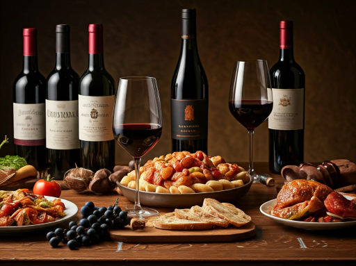
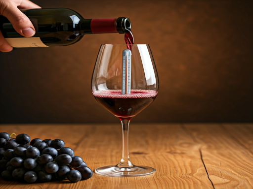
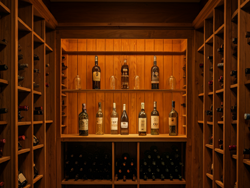

Nuestra intención es que estas guías te sirvan como punto de
partida para explorar el maravilloso mundo del vino.
El sabor de un vino puede verse influenciado por una gran
variedad de factores, desde la uva y el terroir hasta el
momento de servirlo. Cada vino es único y merece ser
disfrutado de manera personal. Por eso, te invitamos a
experimentar con las recomendaciones que encontrarás en
nuestros tutoriales.
Pequeños tips:
Al catar un vino, presta atención a los aromas, sabores
(frutas, especias, madera) y el final en boca. ¡Cada vino es
una experiencia única!
El vino tinto suele maridar bien con carnes rojas, mientras
que el blanco acompaña mejor pescados y aves.
Ahora si, ¡a experimentar!
MARIDA PERFECTO
VER PASO A PASO >
COPA A COPA
VER PASO A PASO >
SERVICIO IDEAL
VER PASO A PASO >
CATA EN CASA
VER PASO A PASO >
VINOS DEL MUNDO
VER PASO A PASO >
INVIERTE EN VINO
VER PASO A PASO >
